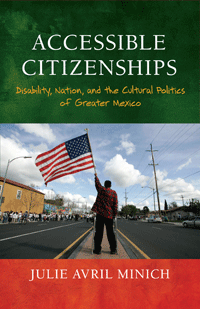

<body bgcolor="#FFFFFF" text="#000000" link="#0000FF" vlink="#CC0000" alink="#CC0000"><center><hr width="350" size="1" align="center" noshade>How disability provides a new perspective on our understanding of the nation and the citizen<hr width="350" size="1" align="center" noshade><p><a href="https://cdcshoppingcart.uchicago.edu/Cart/ChicagoBook.aspx?ISBN=9781439910696&&PRESS=temple" target="_top">Buy this book!</a> | <a href="https://cdcshoppingcart.uchicago.edu/Cart/Cart.aspx?PRESS=temple" target="_top">View Cart</a> | <a href="https://cdcshoppingcart.uchicago.edu/Cart/Cart.aspx?PRESS=temple" target="_top">Check Out</a></p><p></p></center><!--none//--><h1>Accessible Citizenships</h1>
<H2>Disability, Nation, and the Cultural Politics of Greater Mexico</H2>
<h3>Julie Avril Minich</h3>
<P>cloth 1-4399-1069-3 $85.50, Dec 13, <FONT COLOR=#990033>Available</FONT>
<br>paper 1-4399-1070-7 $27.95, Dec 13, <FONT COLOR=#990033>Available</FONT>
<br>Electronic Book 1-4399-1071-5 $26.95 <FONT COLOR=#990033>Available</FONT>
<BR> 240 pp
5.5x8.5
</P><h3 align="center"><P><font color="#996633"> MLA Prize in United States Latina and Latino and Chicana and Chicano Literary Cultural Studies,
2015</font></P>
</H3>
<BLOCKQUOTE><I>"With the help of literature and film about greater Mexico, Julie Avril Minich invites a dialogue between Chicana/o studies and disabilities studies, shifting to a new paradigm for the understanding of nationalism, citizenship, and disability. Minich's daring book imagines political communities as disabled bodies that act in solidarity with other bodies, answering provocative questions about the relationship between citizenship and nationalism and about what it means to make citizenship accessible to disability."</I>
<br>&#151<b>Tobin Siebers</b>, V. L. Parrington Collegiate Professor at the University of Michigan, and author of <I>Disability Aesthetics</I><I></I></BLOCKQUOTE>
<P><i>Accessible Citizenships</i> examines Chicana/o cultural representations that conceptualize political community through images of disability. Working against the assumption that disability is a metaphor for social decay or political crisis, Julie Avril Minich analyzes literature, film, and visual art post-1980 in which representations of nonnormative bodies work to expand our understanding of what it means to belong to a political community.
<P>Minich shows how queer writers like Arturo Islas and Cherr�e Moraga have reconceptualized Chicano nationalism through disability images. She further addresses how the U.S.-Mexico border and disabled bodies restrict freedom and movement. Finally, she confronts the changing role of the nation-state in the face of neoliberalism as depicted in novels by Ana Castillo and Cecile Pineda.
<P><i>Accessible Citizenships</i> illustrates how these works gesture toward less exclusionary forms of citizenship and nationalism. Minich boldly argues that the corporeal images used to depict national belonging have important consequences for how the rights and benefits of citizenship are understood and distributed.
<BR>&nbsp;<h2>Excerpt</h2><P>Excerpt available at <a href="http://www.temple.edu/tempress">www.temple.edu/tempress</a></p>
<BR>&nbsp;<h2>Reviews</h2>
<p><I>"Julie Minich�s </I>Accessible Citizenships<I> provides important discussions of the nature of cultural, social, and political citizenship and the state of the body politic. Its range of topics and the depth of its analyses make it one of the more timely contributions to contemporary literary studies to appear in recent memory. With subtlety, humanity, and sophistication, Minich shows how disability, as a bodily fact and a social imaginary, plays a central role in the construction of political communities and in defining who may or may not inhabit them as rightful citizens."</I> <br>&#151<b>Ram�n Sald�var</b> Hoagland Family Professor of Humanities and Sciences, in the Departments of English and Comparative Literature, and author of <I>The Borderlands of Culture: Am�rico Paredes and the Transnational Imaginary</I>
<p><I>"Minich brings together two different bodies of theoretical scholarship�disability studies and Chicana/o and Latin American cultural studies�in an innovative fashion to successfully show how the two fields speak to each other. She conveys complex theoretical insights in clear, lucid language, and provides close readings of texts both novelistic and filmic. Her theoretical insights make </I>Accessible Citizenships<I> an important contribution to disability studies and to Chicana/o studies."</I> <br>&#151<b>Michael Hames-Garc�a</b> Professor of Ethnic Studies at the University of Oregon, and author of <I>Identity Complex: Making the Case for Multiplicity</I>
<p><i>"[A] necessary and refreshing intervention into disability studies and critical race and ethnicity studies.... Grounded in literary and film analysis with several extended and astute close readings, </i>Accessible Citizenships<i> repeatedly returns to the realities of its major concepts�race, disability, nation, and citizenship�and argues for theorizations addressing the material circumstances that inspire the creation of these texts.... Minich is able quickly to delve deep into the tangled and difficult issues at hand.... The implications and potential applications of Minich�s theoretical interventions are great, but there are two...exceptionally important for the fields in which Minich is most centrally engaged.... </i>Accessible Citizenships<i> lays critical foundations for future work in race and disability studies."</i><br>&#151<b><i>MELUS</i></b>
<p><i>"Breaking new transdisciplinary ground in disability studies and Latin American studies, Minich presents a highly insightful and rigorous study of the ways in which the 'ideology of ability' has been repeatedly represented in Chicana/o texts, images, and film.... </i>Accessible Citizenships<i> presents a nuanced and methodologically sophisticated discussion rooted in literary criticism of cultural works, drawing upon Minich's background in comparative literature, linguistics, and Latin American studies.... </i>Accessible Citizenships<i> is a convincing and essential read."</i><br>&#151<b><i>H-Net's H-Disability</i></b>
<p><i>"In </i>Accessible Citizenships<i>, Julie Avril Minich analyzes a range of cultural artifacts as she develops an insightful reading of the interwoven discourses of citizenship, nationhood, belonging and ability. Firmly rooted in a social justice framework, Minich�s work puts Chicana/o studies and disability studies in conversation in a move that challenges and strengthens both fields. Her interdisciplinary approach dares the reader to think not only beyond the trappings of each discipline but also beyond normalized notions of citizenship and solidarity. Overall, her keen analysis of ideological formations and their rhetorical representations challenges us to adopt a new perspective in our ways of thinking and asking questions about often taken for granted concepts such as nationhood and belonging."</i><br>&#151<b><i>Latino Studies</i></b>
<BR>&nbsp;<h2>Contents</h2><P>
<p>Acknowledgments
<br>Accessibility and Nationalism: An Introduction
<p><b>Part I: The Body Politic of Aztl�n</b>
<br>1. Enabling Aztl�n: Arturo Islas Jr. and Chicano Cultural Nationalis
<br>2. �My Country Was Not Like That�: Cherr�e Moraga, Felicia Luna Lemus, and National Failure
<p><b>Part II: Immobilizing the Border</b>
<br>3. �So Much Life in the Still Waters�: Alex Espinoza and the Ideology of Ability in the U.S.-Mexico Borderlands
<br>4. No Nation for Old Men? Racialized Aging and Border-Crossing Narratives by Guillermo Arriaga, Tommy Lee Jones, and Oscar Casares
<p><b>Part III: Beyond Citizenship</b>
<br>5. Overcoming the Nation: Ana Castillo, Cecile Pineda, and the Stakes of Disability Identity
<p>Epilogue
<br>Notes
<br>Works Cited
<br>Index
</P><BR>&nbsp;<H2>About the Author(s)</H2>
<P><b>Julie Avril Minich</b> is Assistant Professor of English, Mexican American Studies, and Women and Gender Studies at the University of Texas at Austin.</P>
<BR><H2>Subject Categories</H2>
<p><A HREF="/tempress/disability.html" TARGET="_top">Disability Studies</a>
<BR><A HREF="/tempress/latin.html" TARGET="_top">Latin American/Caribbean Studies</a>
<BR><A HREF="/tempress/literature.html" TARGET="_top">Literature and Drama</a>
</p>
<p align="center"><a href="https://cdcshoppingcart.uchicago.edu/Cart/ChicagoBook.aspx?ISBN=9781439910696&&PRESS=temple" target="_top">Buy this book!</a> | <a href="https://cdcshoppingcart.uchicago.edu/Cart/Cart.aspx?PRESS=temple" target="_top">View Cart</a> | <a href="https://cdcshoppingcart.uchicago.edu/Cart/Cart.aspx?PRESS=temple" target="_top">Check Out</a></p><p><font face="Arial" size="1"><a href="copyright.html" onMouseOver="window.status='Web Copyright Policy';return true;" onMouseOut="window.status=''" title="Web Copyright Policy">&copy;</a> 2016 <a href="http://www.temple.edu" target="new" onMouseOver="window.status='Link to Temple University home page';return true;" onMouseOut="window.status=''" title="Link to Temple University home page">Temple University</a>. All Rights Reserved. http://www.temple.edu/tempress/titles/2289_reg.html</font></p>